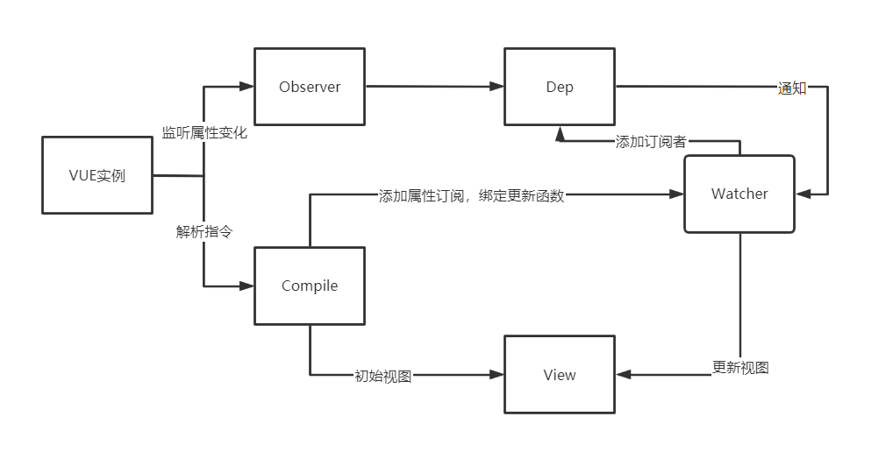
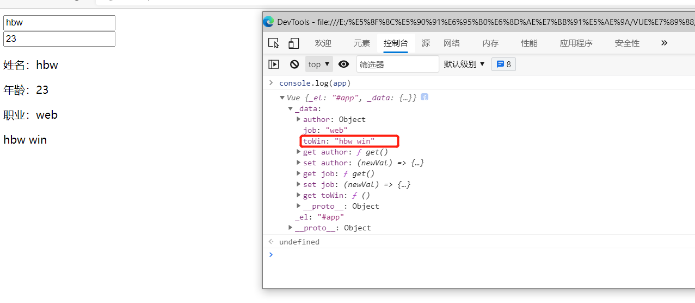
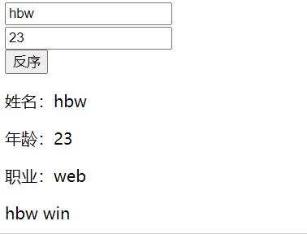

在享受VUE双向数据绑定带来的方便，却一直没有怎么认真去研究VUE内部双向绑定原理的实现过程。特此，就用本博客来探索双向数据绑定，进一步巩固加深对双向绑定的认识。
MVVM M-V-VM中的VM层做了两件事达到了数据的双向绑定 一是将【模型】转化成【视图】，即将后端传递的数据转化成所看到的页面。实现的方式是：数据绑定。二是将【视图】转化成【模型】，即将所看到的页面转化成后端的数据。实现的方式是：DOM 事件监听。
MVVM和MVC模式的区别在于MVVM实现了View和Model的自动同步，当Model的属性发生改变，不用在自己手动操作Dom元素。
数据的双向绑定，在开发过程中最形象的体现就是，一个input输入框，用v-model绑定一个data函数中的一个值后，无论是在页面直接修改input输入框的值，还是通过业务逻辑修改data函数中绑定的值，都能实现两者的同步。
概括来说就是：数据改变时会自动更新视图，视图发生变化时会更新数据 。
简化的双向绑定 1 2 3 4 5 6 7 8 9 10 11 12 13 14 15 16 17 18 19 20 21 22 23 24 25 <!DOCTYPE html > <html > <head > <title > </title > </head > <body > <div id ="app" > <div > <input type ="text" v-model ="name" placeholder ="姓名" /> <input type ="text" v-model ="age" placeholder ="年龄" /> </div > <div > <p > 姓名：<span > {{ name }}</span > </p > <p > 年龄：<span > {{ age }}</span > </p > </div > </div > </body > <script src ="HBW.js" > </script > <script type ="text/javascript" > const app = new HBW('#app' , { name: 'hbw' , age: '23' </script > </html >
1 2 3 4 5 6 7 8 9 10 11 12 13 14 15 16 17 18 19 20 21 22 23 24 25 26 27 28 29 30 31 32 33 34 35 36 37 38 39 40 41 42 43 44 45 46 47 48 49 50 51 52 53 54 55 56 57 58 59 60 61 62 63 64 65 66 67 68 class HBW constructor (el, data )this .el = document .querySelector(el)this ._data = datathis .domPool = {}this .init()init (this .Observe()this .bindDom(this .el)this .Watcher(this .el)Observe (this .data = {}const _this = this for (let key in this ._data) {Object .defineProperty(this .data, key, {true , false , get (return _this._data[key]set (val )Watcher (el )const allInput = el.querySelectorAll('input' )input =>const vModel = input.getAttribute('v-model' )console .log(vModel)if (vModel) {'keyup' , this .handleInput.bind(this , vModel, input), false )handleInput (key, input )const _val = input.valuethis .data[key]= _valbindDom (el )const childNodes = el.childNodesitem =>if (item.nodeType === 3 ) { const value = item.nodeValueif (value.trim().length) {let isValid = /\{\{(.+?)\}\}/ .test(value) if (isValid) {const key = value.match(/\{\{(.+?)\}\}/ )[1 ].trim() this .domPool[key] = item.parentNode this .data[key] || undefined this .bindDom(item)
主要思路：
1.用Object.defineProperty方法进行数据劫持，转换成响应式数据。
2.遍历dom，将相关的dom和响应式数据绑定。
3.对带有v-model属性的input输入框，绑定事件处理函数。
简化的双向绑定还存着一个缺陷，在bindDom函数递归处理文本节点时，在domPool中只存放一个响应数据对象的父节点（HTML中体现为）, 而实际情况中，可能一个响应数据会在很多地方被调用（即html中有很多个），此时则不能做到所有数据的响应式变化，VUE中则使用了一个Dep来解决这个问题。
VUE的双向绑定 VUE2.0版本中的双向数据绑定也使用到了Object.defineProperty方法 ， 但是其过程要更加复杂

VUE中主要采用数据劫持结合发布者-订阅者模式的方式 ，通过Object.defineProperty()来劫持各个属性的setter，getter，在数据变动时发布消息给订阅者，触发相应的监听回调，更新相关的DOM。
发布-订阅者模式（观察者模式）：VUE中一个数据，可能在页面的很多地方都有使用（一个发布者，多个订阅者），一旦数据发生变化，发布者要通知所有的订阅者进行更新
Observer(监听器)：监听数据的每一个属性，当监听到属性发生变化之后通知Watcher订阅者执行更新函数去更新视图，实际VUE中会有很多订阅者Watcher，所以需创建一个容器Dep去做一个统一的管理。
Watcher(订阅者)：当收到属性变化的通知后，执行更新函数去更新视图
Compile(解析器): 对指令进行解析，初始化视图，并且订阅数据变更，绑定更新函数
实现Compile Compile主要将VUE实例中的数据和DOM元素进行编译，比如绑定了v-model指令的输入框和 文本，要将相应的数据显示到视图上。
例如将：
1 <input type ="text" v-model ="name" />
编译为：
1 <input type ="text" value ="hbw" />
核心思路为： 利用fragement避免重绘回流，获取元素节点，根据元素节点的不同，进行不同处理
代码如下：
1 2 3 4 5 6 7 8 9 10 11 12 13 14 15 16 17 18 19 20 21 22 23 24 25 26 27 28 29 30 31 32 33 34 35 36 37 38 39 40 41 42 43 44 45 46 47 48 49 50 51 52 53 54 55 56 57 58 59 60 61 62 63 64 65 66 67 68 69 70 71 72 73 74 75 76 77 78 79 80 81 82 83 84 85 class Compile constructor (el, vm )this .el = el.nodeType === 1 ? el : document .querySelector(el) this .vm = vmlet fragment = this .nodeToFragment(this .el)this .compile(fragment)this .el.appendChild(fragment)nodeToFragment (node )let fragment = document .createDocumentFragment()let firstChildwhile ( firstChild = node.firstChild) {return fragmentcompile (node )let childNodes = node.childNodeslet childNodesArray = [...childNodes]node =>if (node.nodeType === 1 ) { this .compile(node)let nodeAttrs = node.attributeslet nodeAttrsArray = [...nodeAttrs]attr =>if (attr.name.startsWith('v-' )) {let [,directive] = attr.name.split('-' )this .vm)else {let content = node.textContentif (/\{\{(.+?)\}\}/ .test(content)) {this .compileUtil['text' ](node, content, this .vm)getVal (vm, expr )return expr.split('.' ).reduce((data, current ) => {return data[current]model (node, expr, vm )let fn = this .update['modelUpdate' ]let value = this .getVal(vm, expr)text (node, expr, vm )let fn = this .update['textUpdate' ]let content = expr.replace(/\{\{(.+?)\}\}/g , (...args ) => {return this .getVal(vm, args[1 ].trim())modelUpdate (node, value )textUpdate (node, value )
实现Observer Observer需要对vue实例中传入的数据进行劫持，利用Object.defineProperty对数据设置get和set方法
代码如下：
1 2 3 4 5 6 7 8 9 10 11 12 13 14 15 16 17 18 19 20 21 22 23 24 25 26 27 28 29 30 31 32 33 34 35 36 37 class Observer constructor (data )this .observer(data) observer (data )if (data && typeof data === 'object' ) {for (let key in data) {this .defineReactive(data, key, data[key])defineReactive (obj, key, value )this .observer(value)Object .defineProperty(obj, key, {get (return value(newVal ) => {if (newVal === value || (newVal !== newVal && val !== val)) {return this .observer(newVal)
至此已近可以监听每个数据的变化，监听到数据变化后就需要通知订阅者去更新视图，此时还需要涉及到Dep
实现Watcher Watcher作为Observer和Compile之间的纽带，会观察实例中的数据， 但数据发生变化时，会进行相应的处理。在使用VUE开发的过程中有时会用到下面的语句：
1 2 3 vm.$watch(vm, 'name' , (newVal ) => {
这其实也是一个Watcher
Watcher代码实现如下：
1 2 3 4 5 6 7 8 9 10 11 12 13 14 15 16 17 18 19 20 21 class Watcher constructor (vm, expr, callback )this .vm = vmthis .expr = exprthis .callback = callbackthis .oldVal = this .get()get (let val = compileUtil.getVal(this .vm, this .expr)return valupdate (let newVal = this .get()if (newVal !== this .oldVal) {this .callback(newVal)
为了实现编译后，能够添加属性订阅，要在指令编译工具compileUtil中的model函数、text函数中实例化Wathcer，实例化时传入的回调函数则是compileUtil中的相应update函数（此处Watcher的回调函数，会在Dep通知更新时执行，这是一个很巧妙的点）
实现Dep Dep是Observer与Watcher之间的纽带，Watcher订阅某个Observer的Dep，当Observer观察的数据发生变化时，通过Dep通知各个已经订阅的Watcher。
在上面实现了Compile、Observer、Watcher后，三者之间还没关联起来，整体也没实现视图 <-> 数据 的双向绑定
Dep也称为依赖收集， Dep内会存储所有的Watcher， 当数据发送改变时，Dep会通知订阅该数据的监听者进行更新。
代码如下：
1 2 3 4 5 6 7 8 9 10 11 12 13 14 15 16 class Dep constructor (this .subs = []addSub (watcher )this .subs.push(watcher)notify (this .subs.forEach(watcher =>
Dep的代码只有短短的几行，但却十分关键。
为了实现Observer和Wathcer的联系，要在Observer函数中的defineReactive中为每一个属性实例化一个Dep对象，用于收集订阅了该属性的Watcher，同时Dep对象要维护一个全局的target属性，该属性用于记录当下时刻VUE实例中要被收集的Watcher（每次Watcher更新时调用Watcher中的update方法，则target会记录下该实例）
实现Computed Computed是对于已有数据进行一些计算，所以可以在VUE对象实例化后，编译前，将Computed中的数据挂载到data中
1 2 3 4 5 6 7 8 9 10 11 12 13 14 15 16 17 18 19 20 21 22 class Vue constructor (options )this ._el = options.el this ._data = options.datalet computed = options.computedif (this ._el) {new Observer(this ._data)for (let key in computed) {Object .defineProperty(this ._data, key, {get (return computed[key].call(this )new Compile(this ._el, this )
在实例初始化完成后，打印出实例，可发现computed中的数据已近添加到了data中

实现Methods methods的实现思路和Computed相似，但是要注意的是将methods中的方法挂载到VUE实例上，而非Computed挂载到VUE实例中的data
1 2 3 4 5 6 7 8 9 10 11 12 13 14 15 16 17 18 19 20 21 22 23 24 25 26 27 28 29 30 31 class Vue constructor (options )this ._el = options.el this ._data = options.datalet computed = options.computedlet methods = options.methodsif (this ._el) {new Observer(this ._data)for (let key in computed) {Object .defineProperty(this ._data, key, {get (return computed[key].call(this )for (let key in methods) {Object .defineProperty(this , key, {get (return methods[key].call(this ._data)new Compile(this ._el, this )
最终实现效果 
思路回顾 在实例化VUE对象时，会首先用Object.defineProperty方法对数据进行劫持（对象访问器中的get和set方法）并为每一个属性新增一个依赖收集者Dep，在初次编译的时候，会读取VUE实例中和视图相关的响应式数据，并将视图中相应的指令和模板创建对应的Watcher,此时会触发getter函数（即要将VUE实例中的数据渲染到视图上，此时会使用defineProperty中定义的get方法），而在调用getter时，会将该Watcher放入该响应数据的dep数组中，完成依赖收集。
当数据发生变化或视图上数据发生变化，会触发数据劫持的setter函数，此时Dep会通知Watcher队列进行数据更新。
源码 码云地址
后话 在学习双向绑定原理的时候，不得不感叹实现思路的巧妙，而自己实现的这个版本，并没有考虑到很多细节，也还有不少缺陷，但是个人感觉自己最大的收获是数据劫持结合发布者-订阅者模式的方式–这种设计模式，对于初次了解的我来说，宛如打开了一扇新世界的大门。有时候多看源码，还是有很多收获的。
参考 [vue双向数据绑定原理](vue双向数据绑定原理 (juejin.cn) )
[VUE源码解析](Vue 源码解析：深入响应式原理 · Issue #7 · DDFE/DDFE-blog · GitHub )